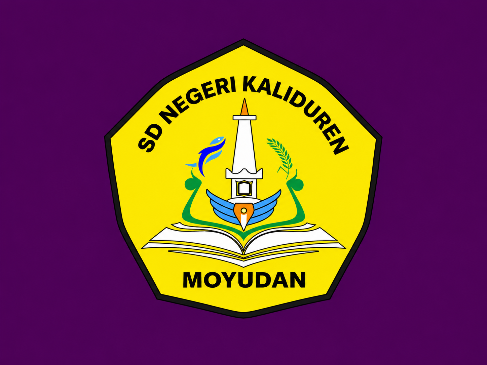
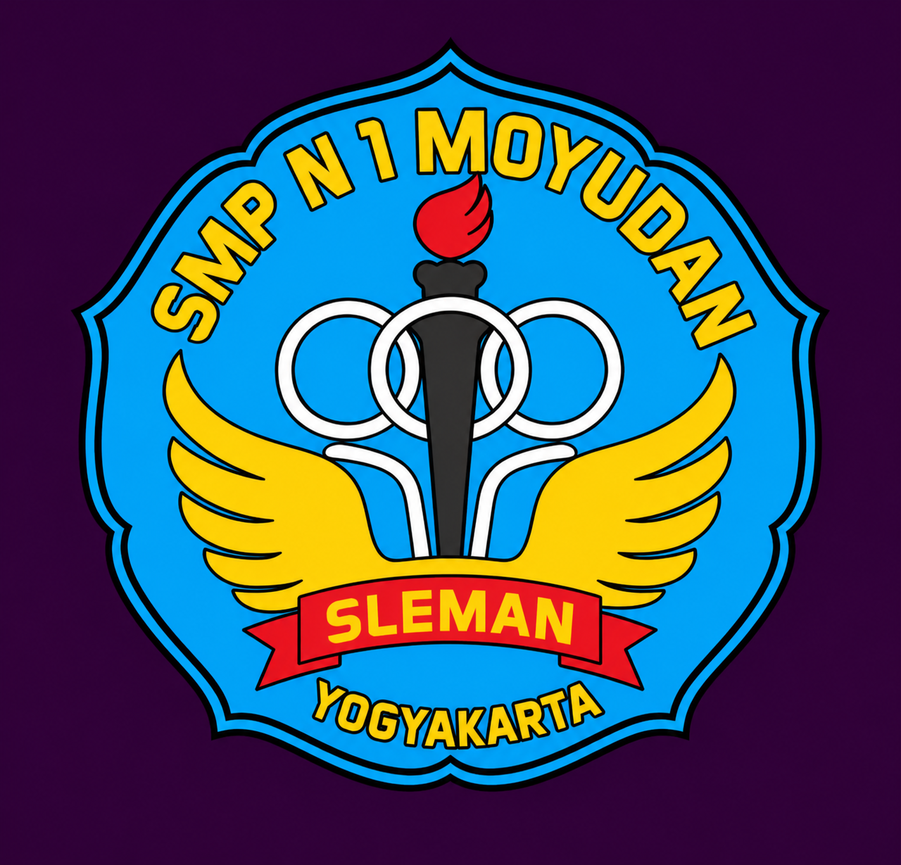
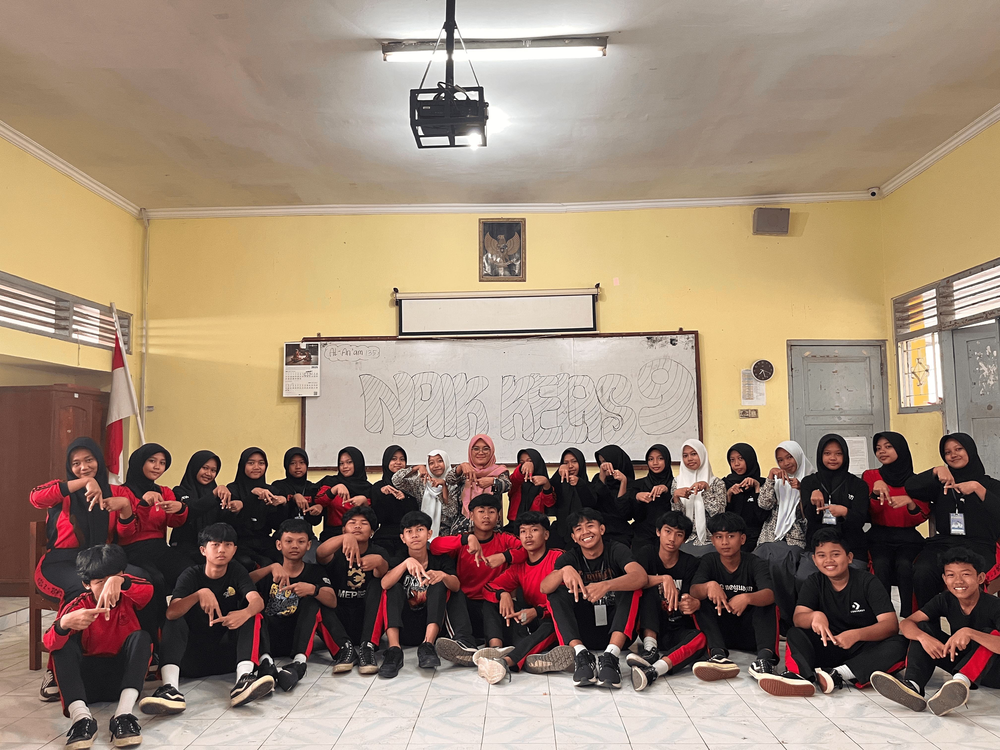
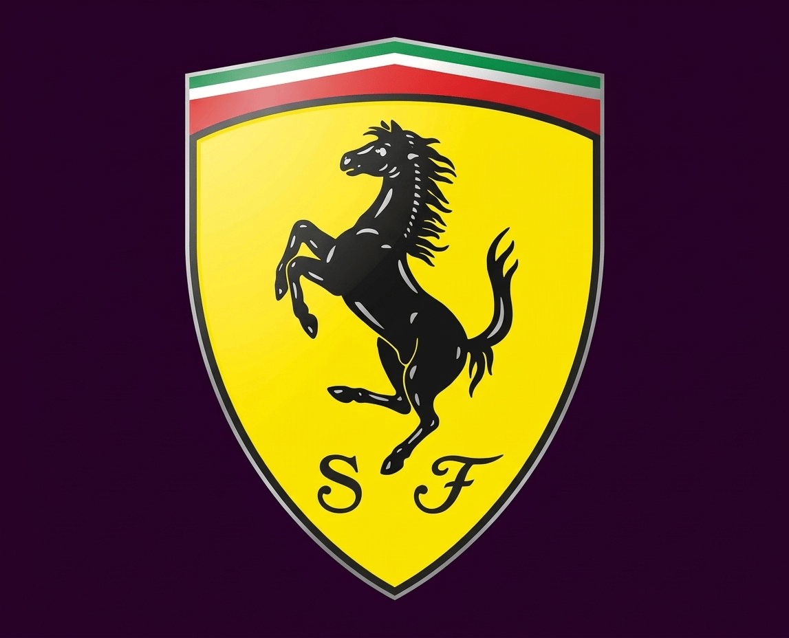

|
Bersekolah di sekolah dasar merupakan fondasi utama bagi
perkembangan karakter dan ilmu pengetahuan seorang anak. Saya
merasa sangat beruntung dapat mengenyam pendidikan dasar di
SDN Kaliduren yang menyenangkan. Selama menimba ilmu di sana,
banyak pengalaman berharga serta kenangan indah bersama teman
dan guru yang tidak akan pernah terlupakan. Proses belajar
tersebut berlangsung lancar hingga saya berhasil
menuntaskannya dalam kurun waktu 6 tahun. Pengalaman ini
memberikan wawasan mendalam serta pencapaian akademik yang
menjadi bekal kuat untuk jenjang pendidikan berikutnya.
|

|
|
|

|
Setelah lulus dari SD, saya memutuskan untuk lanjut bersekolah
ke jenjang yang lebih tinggi untuk menuntut ilmu. Pilihan saya
jatuh pada SMPN 1 Moyudan, tempat di mana petualangan dan
masa-masa remaja saya dimulai. Di sana, saya bertemu dengan
teman-teman asik yang selalu membawa keceriaan dan warna baru
dalam setiap harinya. Kami melewati berbagai momen bersama di
era sekolah menengah yang penuh dengan dinamika dan rasa ingin
tahu. Suasana sekolah serta vibes positif dari lingkungan
sekitar membuat hari-hari terasa begitu hidup dan
menyenangkan. Semua pengalaman manis maupun pahit yang
tercipta di sana sungguh tidak bisa dilupakan begitu saja.
Banyak kejadian tak terduga yang menghiasi perjalanan kami,
mulai dari momen lucu di kelas hingga kegiatan seru di luar
jam pelajaran. Setiap detik yang terlewati berubah menjadi
kenangan indah yang tersimpan rapi dalam ingatan. Kami kerap
menghabiskan waktu bersama untuk bermain dan bersenda gurau
tanpa beban setelah jam sekolah usai. Tanpa disadari, waktu
berlalu cepat membawa kami pada penghujung masa-masa SMP.
Hingga akhirnya, momen dari akhir hingga ke perpisahan pun
tiba, menutup satu babak berharga dan mengantarkan kami menuju
jalan masing-masing.
|
|
|
Masa-masa menduduki Kelas 8 menjadi titik balik paling
berkesan dalam perjalanan sekolah menengah saya. Bagi sebagian
besar dari kami, periode ini sering disebut sebagai era
terbaik karena suasana kekeluargaan dan solidaritas antarteman
berada pada puncaknya. Ada begitu banyak momen seru yang
tercipta setiap harinya, mulai dari riuhnya suasana kelas saat
jam kosong hingga kerja sama kompak saat mempersiapkan acara
sekolah. Semua tawa, canda, dan kebersamaan yang terjalin
selama satu tahun penuh itu diakui oleh hampir semua siswa
sebagai kenangan terbaik yang akan selalu dirindukan sepanjang
masa.
|

|
|
|
|
Menjalani aktivitas sehari-hari terasa lebih berwarna ketika
saya meluangkan waktu untuk menikmati hobi yang paling saya
sukai. Salah satu kegiatan favorit saya adalah mendengarkan
Music kapan pun ada waktu senggang di tengah kesibukan.
Suasana dan vibes yang dihadirkan oleh alunan nada selalu
berhasil memberikan kedamaian serta iketenangan dalam pikiran.
Dari berbagai genre yang ada, musik RnB menjadi pilihan utama
yang paling sering menemani hari-hari saya. Alunan ritme dan
melodi khas dari era musik modern ini tidak hanya menghibur,
tetapi juga menyuntikkan motivasi baru untuk terus melangkah
maju. Setiap lantunan lagunya membakar semangat dalam diri
untuk menyelesaikan berbagai tantangan yang menghadang. Tak
jarang, perpaduan nada tersebut memicu munculnya kreativitas
dan ide-ide segar saat saya sedang berkarya. Pada akhirnya,
irama musik yang pas selalu membantu saya menjaga fokus secara
maksimal dalam setiap pekerjaan.
|
|
|
Best Club in London, All Time!!
|
|
|
|

|
KING LEKLEK OTW PODIUMM!!
|
|